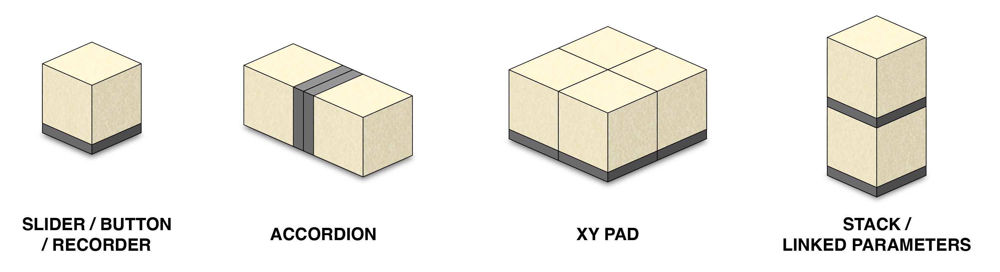
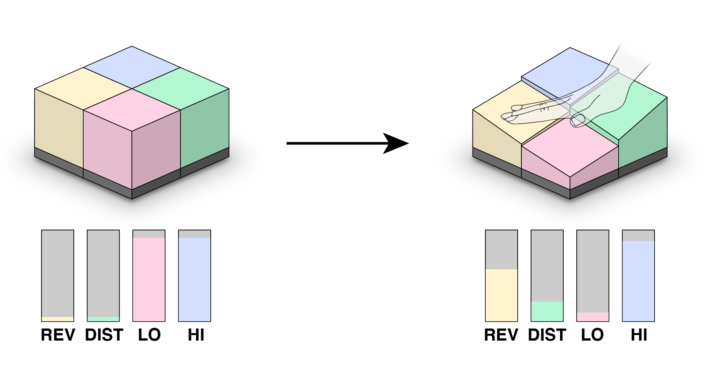

Squish
A squishable, modular, MIDI controller
HOW IT WORKS
Compressive force is transferred from the yellow foam blocks to a small piece of velostat foam, which connects two pieces of copper tape. The velostat’s resistance varies with pressure which allows applied pressure to be digitally read with an ESP32. These readings are then converted into MIDI messages that can be mapped to any parameter or trigger.
Electronics
Programming
Interaction Design
Fabrication
Sound Design
Python
Arduino
Force Sensing
Pure Data
CAD
3D Printing
Undergradute Thesis Project
Spring 2024
BACKGROUND
Despite the growing popularity of digital music instruments (DMIs) and relevant technological advances, accessibility and expressive potential remain significant challenges for musical interface designers. These issues stem from generic input-output mappings, sensor limitations, and a lack of physical connection between musicians and instruments. Squish explores the benefits of incorporating soft materials into musical interfaces and why DMIs should be designed with musician-instrument relationships as a priority in order to enhance intuitiveness and expressiveness.
Squish is a set of foam blocks embedded with custom pressure sensors, which encourage tactile interaction and give the user nuanced control over various musical parameters. The modular design of the foam blocks allows for versatile configurations, enabling users to control multiple parameters simultaneously with simple, but responsive gestures.
Assembly of the pressure sensor within a block

Potential Configurations

XY Pad with Mappings
Assembly of early prototype